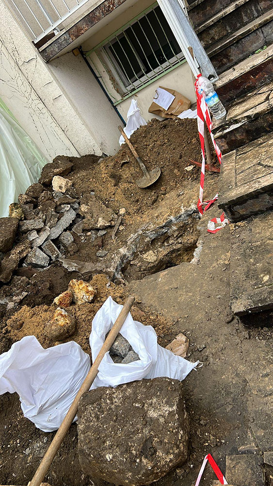

Une flaque au pied d’un mur de cave ou de parking, un sol qui ne sèche pas. En sous-sol, l’eau peut venir de plusieurs endroits, et une partie des canalisations de l’immeuble passe sous le sol de la cave ou de la cour. Avant de creuser, il faut savoir d’où vient l’eau, et où passe la canalisation enterrée.
En bref
- L’eau dans une cave ou un parking en sous-sol peut venir d’une arrivée d’eau qui fuit, d’une évacuation, d’un reflux de l’égout ou d’une infiltration par les murs.
- Pour une canalisation enterrée, on repère d’abord son tracé, on regarde l’intérieur à la caméra quand c’est une évacuation, puis on ouvre au bon endroit.
- À Paris, l’immeuble entretient ses canalisations d’évacuation jusqu’à la partie publique du branchement, et son réseau d’eau après le robinet d’arrêt qui suit le compteur.
D’où vient l’eau dans une cave
Plusieurs causes, qui ne se traitent pas de la même façon :
- une fuite sur une arrivée d’eau : l’eau sous pression s’échappe dans le sol, même quand personne n’utilise d’eau
- une fuite sur une évacuation d’eaux usées, d’eaux vannes ou d’eaux pluviales : l’Agence Qualité Construction note par exemple qu’une conduite ovalisée peut se fissurer, voire se rompre
- un reflux de l’égout : à Paris, par temps de pluie, l’eau de l’égout peut monter jusqu’au niveau de la rue, et tout appareil d’évacuation placé plus bas que la chaussée doit avoir un dispositif anti-refoulement
- une infiltration par les murs ou le sol : l’AQC cite notamment les eaux souterraines, les regards et réseaux enterrés mal étanches à proximité, et les gouttières ou descentes d’eaux pluviales qui fuient
Notez quand l’eau arrive : après la pluie, ou tout le temps. Ce simple relevé aide à orienter la recherche.
En février 2026, dans un immeuble parisien, l’eau entrait dans les caves quand il pleuvait. Elle passait par deux endroits : la jonction entre le mur et le trottoir, qui s’était ouverte, et une descente d’eaux pluviales en fonte qui fuyait dans l’épaisseur d’un mur. De l’eau versée par le tampon extérieur ressortait aussitôt le long du mur, à la sortie de la fonte.
Colonne bouchée dans l’immeuble : que faire
Odeur d’égout : d’où elle peut venir
Repérer le tracé de la canalisation enterrée
Une canalisation enterrée ne se voit pas, et le plan du réseau n’existe pas toujours. L’AQC note que l’absence de plan et d’accès visitables gêne l’entretien et les recherches.
Le détecteur de canalisation repère sous le sol le tracé et la profondeur d’un tuyau enterré. On sait ainsi où passe le réseau avant d’ouvrir la cour, le sol de la cave ou une allée.
Recherche de fuite sur canalisations enterrées
Inspecter l’évacuation, tester l’arrivée d’eau
Sur une évacuation, la caméra d’inspection entre dans la canalisation, par un regard ou un tampon de visite. L’image s’affiche en direct à l’écran : on voit l’état du tuyau de l’intérieur. Selon la situation et le besoin, un hydrocurage nettoie d’abord le tuyau.

Sur une arrivée d’eau, ce sont plutôt des tests : mise en pression du réseau, lecture du compteur, fermeture d’un robinet d’arrêt pour voir si l’écoulement s’arrête. Selon la situation et le besoin, nous utilisons aussi le gaz traceur ou l’écoute acoustique, pour situer la fuite le long du tuyau.
Un de nos dossiers de fin 2025 le montre. De l’eau entrait dans une cave. Une visite a relevé, du côté de la propriété voisine, une fissure au sol de la cave et des traces d’humidité sur une canalisation enterrée, sans pouvoir conclure. Le rapport l’a dit, et a demandé des investigations complémentaires. À la visite suivante, deux constats ont tranché : le compteur d’eau du voisin tournait alors que personne n’utilisait d’eau, et l’écoulement dans la cave s’arrêtait dès que son robinet d’arrêt était fermé. La fuite venait de l’alimentation enterrée de la maison voisine. Le rapport a préconisé de la réparer ou de la remplacer en urgence, et de couper l’eau après chaque usage en attendant.
Ouvrir au bon endroit, changer le tronçon ou le regard
Une fois le point situé, on ouvre là, pas ailleurs : une tranchée dans la cour, une fouille au pied d’un mur, le sol de la cave. On change le tronçon abîmé, ou le regard s’il est en cause.
Quand faut-il ouvrir pour trouver une fuite ?


Remise en état des réseaux des eaux vannes (EV) et des eaux pluviales (EP)
Pour le réseau refait, l’AQC recommande des regards de visite à chaque changement de direction et sur les grandes longueurs, et des essais d’écoulement et d’étanchéité avant la livraison. Elle demande aussi à l’installateur de remettre un plan du réseau à son client. Ensuite, la tranchée se rebouche et le sol se refait : dalle, pavés ou pelouse.
Ce qui fait varier le prix d’une recherche de fuite
Réseau de l’immeuble ou réseau public : qui s’en occupe
À Paris, l’immeuble entretient ses canalisations d’évacuation jusqu’à la partie publique du branchement, réparée par la Ville, et son réseau d’eau après le robinet d’arrêt qui suit le compteur. Deux règlements fixent ces limites :
- Eaux usées et eaux pluviales : la partie du branchement située sous le domaine public est entretenue et réparée par la Ville de Paris, seule habilitée à y travailler. L’entretien des canalisations qui mènent les eaux jusqu’à cette partie publique revient au propriétaire de l’immeuble, comme l’entretien et le renouvellement des installations intérieures et extérieures (règlement d’assainissement de Paris).
- Eau potable : la responsabilité d’Eau de Paris s’arrête après le robinet d’arrêt qui suit le compteur. Pour une fuite au-delà, en propriété privée, on appelle un plombier. Pour une fuite jusqu’à ce robinet, on n’intervient pas soi-même : on appelle Eau de Paris au 09 74 50 65 07, selon son règlement.
En dehors de Paris, le règlement du service de l’eau et celui de l’assainissement de la commune fixent la limite.
Canalisation commune ou privative : qui répare dans l’immeuble
Côté assurance, lisez les contrats. Pour l’assurance habitation, l’INC indique que la plupart des contrats ne couvrent que les canalisations non enterrées, et que les dommages liés aux ruptures ou refoulements des canalisations souterraines sont généralement exclus.
Un chantier en photos
Ce chantier, en extérieur, a réuni une recherche de fuite enterrée, le changement d’une canalisation et celui d’un regard. Les photos suivent les étapes : la tranchée ouverte dans le jardin, les tuyaux dégagés au fond, le nouveau regard en béton posé sur un lit de sable, puis le cadre du tampon et le tampon refermé au niveau de la pelouse.
Sources
- Agence Qualité Construction, « Humidité en sous-sol des bâtiments », fiche pathologie bâtiment B.02, édition 2026
- Agence Qualité Construction, « Pathologie des canalisations eaux vannes-eaux usées et interfaces avec le VRD », fiche pathologie bâtiment A.09, édition 2026
- Ville de Paris, « Règlement d’assainissement de Paris », édition 2025, en vigueur depuis le 1er janvier 2026, articles 4, 10, 29 et 31
- Eau de Paris, « Règlement du service public de l’eau à Paris », adopté par le Conseil de Paris en novembre 2023, applicable depuis le 1er janvier 2024
- Institut national de la consommation (INC), « L’assurance dégâts des eaux », fiche pratique J 80, publiée le 16 juin 2018
Sources consultées le 15 octobre 2026. Cet article donne des repères généraux. Les règlements locaux, le contrat d’assurance et le règlement de copropriété font foi.